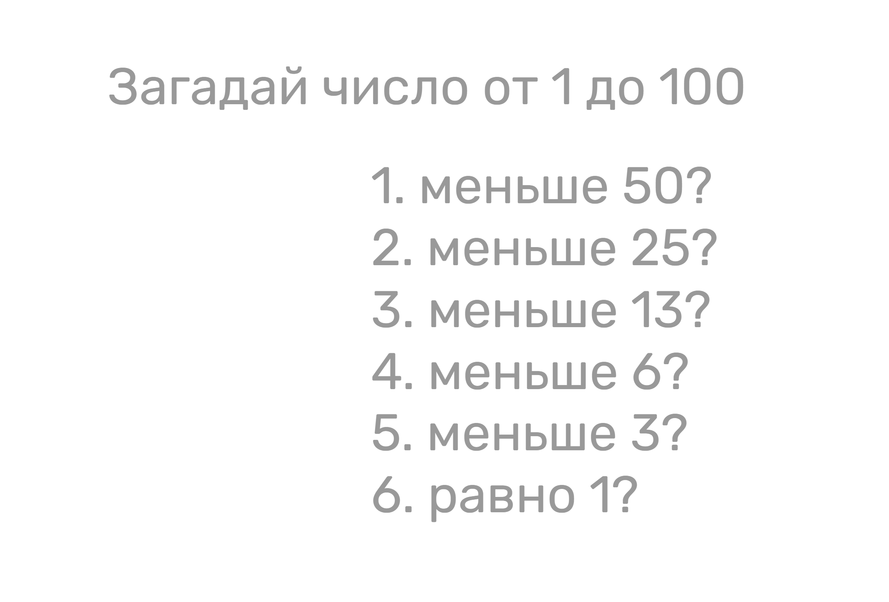

Информация
Как измерить информацию?
- Бит — это самая маленькая единица информации.
- Он может принимать только два значения:
ДА или НЕТ (0 или 1).
- Как если бы ты отвечала на вопрос, где возможны только эти два варианта ответа.
Но что если информации больше? Как это посчитать?
Например, какой объём информации в значении кубика?
- Чтобы угадать число на кубике, можно задавать вопросы, на которые можно ответить "да" или
"нет".
Необязательно задавать 6 вопросов!
Мы можем поступить более умно, если будем задавать вопросы специальным образом.
- Чтобы узнать число на кубике, достаточно не более 3 вопросов!
- Этот метод позволяет находить ответ, отсекая неподходящие варианты. (Это основа для более сложных алгоритмов.)
А если нужно отгадать число от 1 до 10?
- Тогда достаточно не более 4х вопросов!

- Чтобы быстро угадать число от 1 до 100, нужно всего 6-7 вопросов.
- Секрет в том, чтобы каждый раз делить диапазон возможных чисел пополам.
- Этот эффективный способ называется бинарный (двоичный) поиск.

- Количество вариантов, которые можно закодировать, зависит от количества бит и подчиняется степеням двойки.
- Формула:
Количество вариантов = 2ⁿ, где n — количество бит.
- Пример:
- 1 бит = 2¹ = 2 варианта (0 или 1)
- 3 бита = 2³ = 8 вариантов
- 8 бит = 2⁸ = 256 вариантов

- Чем больше бит мы используем, тем больше различных чисел или комбинаций мы можем закодировать.
- Например, с помощью 3 битов можно создать 8 разных значений
- например, этого достаточно, чтобы записать числа от 0 до 7.

Сколько нужно бит, чтобы создать
уникальное значение для каждого жителя Земли?
Можем написать программу на Python!

Можно закодировать не только
числа, но любую информацию. Например, изображения!
- Любое изображение состоит из маленьких точек — пикселей.
- Цвет каждого пикселя кодируется с помощью битов.
- Пример: Если в картинке 4 цвета, то на каждый пиксель нужно 2 бита (так как 2² = 4).
- Размер файла изображения зависит от общего количества пикселей и количества бит на цвет.
А есть большие единицы измерения информации, чем бит?
- 1 Байт = 8 Бит. Байт — это основная единица.
- Все последующие единицы образуются умножением на 1024 (2¹⁰):
- 1 Килобайт (КБ) = 1024 Байт
- 1 Мегабайт (МБ) = 1024 Килобайт
- 1 Гигабайт (ГБ) = 1024 Мегабайт
- 1 Терабайт (ТБ) = 1024 Гигабайт
В таблице также показаны степени двойки, которые полезно знать для понимания объемов информации.
Вывод:
Вся информация в компьютере (тексты, картинки, звуки) в конечном счете представлена в виде двоичного кода —
последовательности нулей и единиц (битов). Понимание битов и байтов — это основа информатики